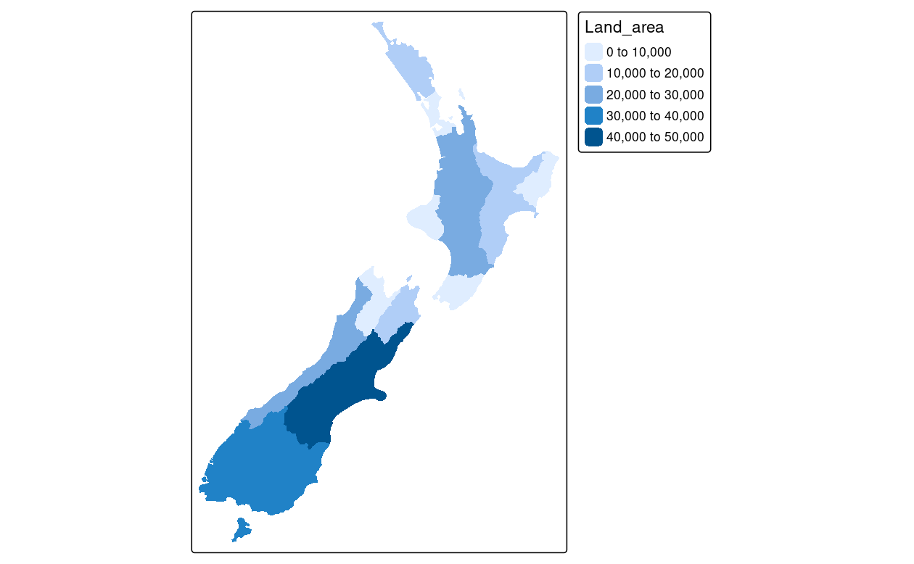
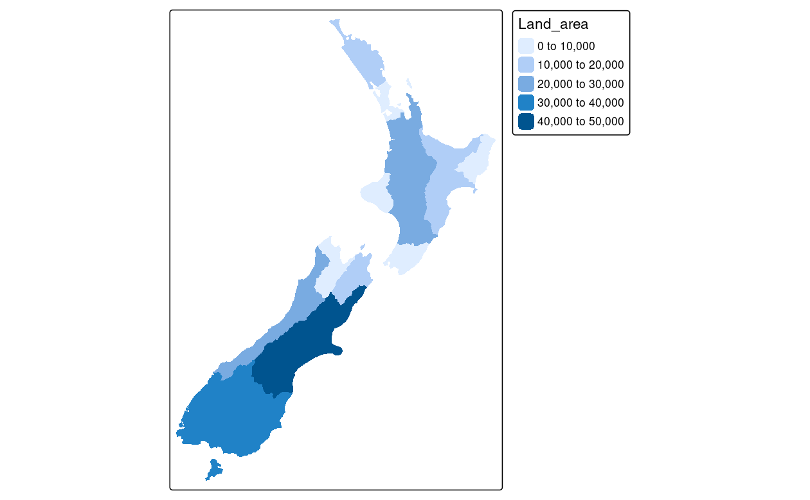

9 R で地図を作成
必須パッケージ
- この章では、すでに使用している以下のパッケージが必要である。
- 本章での主要なパッケージは tmap である。 CRAN よりも頻繁に更新されている r-universe 版をお勧めする。訳註: macOS では、tmap は文字化けすることがある。macOS で ragg を使用することで文字化けが解消する。
install.packages("tmap", repos = c("https://r-tmap.r-universe.dev",
"https://cloud.r-project.org"))- 以下の可視化に関するパッケージを使用する (動的な地図アプリを開発したい場合は、shiny もインストールしよう)。
- Section 4.3 で紹介した二つのデータセットを読み込む必要がある。
nz_elev = rast(system.file("raster/nz_elev.tif", package = "spDataLarge"))9.1 イントロダクション
地理学的研究は、その結果を伝えることで満足度と重要性が高まる。
地図作成あるいは地図学は、コミュニケーションと細部への注意、そして創造力を必要とする古来の技術である。
R における静的地図は、Section 2.2.3 で見たように、plot() 関数を使えば簡単にできる。
R の基本メソッドを使って高度な地図を作成することも可能ではある (Murrell 2016)。
しかし、この章の焦点は、地図作成専用のパッケージを使った地図作成にある。
新しいスキルを身につけるには、1 つの分野の知識を深めてから手を広げていくことが大切である。
地図の作成も例外ではない。そのため、この章では多くのパッケージを表面的にではなく、1 つのパッケージ (tmap) を深く掘り下げて説明する。
地図作成は、楽しくてクリエイティブなだけでなく、実用的にも重要な役割を担っている。 丁寧に作られた地図は、仕事の成果を伝えるのに最適な方法であるが、デザインの悪い地図は印象を悪くすることがある。 よくあるデザイン上の問題点としては、Journal of Maps のスタイルガイドで説明されているように、文字の配置やサイズ、読みにくさ、色の選び方の不注意などが挙げられる。 さらに、地図作りが不十分だと、結果の伝達にも支障が生じることがある (Brewer 2015)。
素人が作ったような地図では、情報の重要性が伝わらず、専門家によるデータ調査をうまく表現できないことがある。 地図は数千年前からさまざまな用途に使われてきた。 歴史的な例としては、3000年以上前の古バビロニア王朝の建物や土地所有の地図、約2000年前のプトレマイオスの代表作地理学の世界地図などがある (Talbert 2014)。
地図は、歴史的にエリートが自分のために作るか、あるいはエリートのために誰かが作る行為であった。 しかし、R パッケージの tmap や QGIS の印刷レイアウトのようなオープンソースの地図作成ソフトが登場し、誰でも高品質の地図を作ることができるようになり、「市民科学」が可能になったことで、状況は一変した。 また、ジオコンピュテーションの研究成果をわかりやすく紹介するためには、地図が最適な方法であることが多い。 したがって、地図作成はジオコンピュテーションの重要な一部であり、世界を記述するだけでなく、世界を変えることにも重点を置いているのである。
この章では、さまざまな地図の作り方を紹介する。 次のセクションでは、美観への配慮、ファセット、差し込み地図 (inset map) など、さまざまな静的地図について説明する。 また、Section 9.3 から Section 9.5 では、アニメーションやインタラクティブな地図 (Web 地図や地図アプリケーションを含む) を紹介している。 最後に、Section 9.6 は、ggplot2 や cartogram など他の地図作成用パッケージを紹介する。
9.2 静的地図
ジオコンピュテーションの視覚的な出力として最も一般的なのが静的地図であろう。
標準的なフォーマットとしては、ラスタ出力用に .png、ベクタ出力用に .pdf がよく用いられる。
当初、R が作成できる地図の種類は静的地図だけだった。
sp (Pebesma and Bivand 2005 参照) のリリースで状況が進展し、その後、地図作成のための多くの技術、関数、パッケージが開発された。
しかし、インタラクティブ地図がどんどん発明されてきたにもかかわらず、10 年経っても R では依然として静的なプロットが地理データの可視化の重点となっていた (Cheshire and Lovelace 2015)。
ジェネリック関数の plot() 関数は、ベクタやラスタの空間オブジェクトから静的地図を作成する最速の方法であることが多い (Section 2.2.3 と Section 2.3.3 の項を参照)。
特にプロジェクトの開発段階では、シンプルさとスピードが優先され、plot() はこの点で優れている。
Base R のアプローチは拡張可能で、plot() は何十もの引数を提供している。
また、Murrell (2016) の Chapter 14 に示されているように、静的地図の低レベル制御を可能にする grid パッケージもアプローチの 1 つである。
この章では、tmap に焦点を当て、重要な美観とレイアウトのオプションに重点を置いている。
tmap は強力で柔軟な地図作成パッケージで、賢明なデフォルトが設定されている。
簡潔な構文で、ggplot2 のユーザには馴染みのある最小限のコードで魅力的な地図を作成することができる。
また、tmap_mode() を介して、同じコードで静的な地図とインタラクティブな地図を生成するユニークな機能を備えている。
最後に、(sf オブジェクトと terra オブジェクトを含む) 空間クラスを受け入れることができる点では、ggplot2 などよりも優れている。
9.2.1 tmap の基礎知識
ggplot2と同様に、tmap は「グラフィックの文法」という考えに基づいている (Wilkinson and Wills 2005)。
各入力データセットは、地図上の位置 (データの geometry で定義)、色、その他の視覚的変数など、さまざまな方法で「地図作成」することができる。
基本的な構成要素は tm_shape() (入力データ、ベクタまたはラスタのオブジェクトを定義する) で、その後に tm_fill() や tm_dots() などの 1 つまたは複数のレイヤ要素が続く。
以下のチャンクは、このようなレイヤ構成を示し、Figure 9.1 の地図を生成する。
# nz shape に塗りつぶしレイヤを追加
tm_shape(nz) +
tm_fill()
# nz shape に境界レイヤを追加
tm_shape(nz) +
tm_borders()
# nz shape に塗りつぶしと境界レイヤを追加
tm_shape(nz) +
tm_fill() +
tm_borders() FIGURE 9.1: New Zealand の形状を tmap 関数で塗りつぶし (左)、境界 (中)、塗りつぶしと境界 (右) のレイヤを追加してプロット。
この場合、tm_shape() に渡されるオブジェクトは nz で、New Zealand の地域を表す sf オブジェクトである (sf オブジェクトについては Section 2.2.1 を参照)。
nz を視覚的に表現するためにレイヤを追加し、tm_fill() と tm_borders() でそれぞれ Figure 9.1 の陰影部分 (左図) と枠線 (中図) を作成している。
これは、直感的な地図作りの手法である。
新しいレイヤを追加する一般的なタスクは、追加演算子 + とそれに続く tm_*() によって引き受けられる。
アスタリスク(*)は、以下のように名前から明らかなレイヤを指す。
-
tm_fill(): (複合) ポリゴンの塗りつぶし -
tm_borders(): (複合) ポリゴンの境界線 -
tm_polygons(): (複合) ポリゴンの塗りつぶしと境界線 -
tm_lines(): (複合) 線の線 -
tm_symbols(): (複合) 点、(複合) 線、(複合) ポリゴンのシンボル -
tm_raster(): ラスタデータの色付きのセル (３レイヤのあるラスタにはtm_rgb()もある) -
tm_text(): (複合) 点、(複合) 線、(複合) ポリゴンのテキスト
Figure 9.1 の右側のパネルでは、塗りつぶし (fill) レイヤの上に境界 (borders) を重ねた結果を示している。
9.2.2 地図オブジェクト
tmap の便利な点は、地図を表すオブジェクトを格納できることである。
以下のコードは、Figure 9.1 の最後のプロットをクラス tmap のオブジェクトとして保存することでこれを示している (tm_polygons() 関数は、tm_fill() + tm_borders() を単一の関数に凝縮したもの)。
map_nz = tm_shape(nz) + tm_polygons()
class(map_nz)
#> [1] "tmap"map_nz は後でプロットすることができる。例えば、レイヤを追加したり (下図参照)、コンソールで map_nz を実行するだけで、print(map_nz) と同じ意味になる。
新しい shape は、+ tm_shape(new_obj) で追加することができる。
この場合、new_obj は、先行するレイヤの上にプロットされる新しい空間オブジェクトを表す。
このようにして新しい形状が追加されると、次の新しい形状が追加されるまで、それ以降のすべての美観機能はその形状を参照する。
この構文により、複数の形状やレイヤを持つ地図を作成することができる。次のコードでは、関数 tm_raster() を使ってラスタレイヤ (レイヤを半透明にするために col_alpha を設定している) を描画している様子を示している。
先に作成した map_nz オブジェクトをベースに、新しい地図オブジェクト map_nz1 を作成する。このオブジェクトには、New Zealand 全土の平均標高を表す別の図形 (nz_elev) が含まれている (Figure 9.2 左図)。
さらに図形やレイヤを追加することもできる。以下のコードでは、New Zealand の領海を表す nz_water を作成し、作成した線を既存の地図オブジェクトに追加している。
nz_water = st_union(nz) |>
st_buffer(22200) |>
st_cast(to = "LINESTRING")
map_nz2 = map_nz1 +
tm_shape(nz_water) + tm_lines()tmap オブジェクトに追加できるレイヤやシェイプの数に制限はない。同じシェイプを複数回使用することも可能である。
Figure 9.2 に示される最終的な地図は、先に作成された map_nz2 オブジェクトに tm_dots() で高ポイントを表すレイヤ (オブジェクト nz_height に格納) を追加して作成される (tmap のポイントプロット機能の詳細については ?tm_dots と ?tm_bubbles を参照)。
その結果、4つのレイヤを持つ地図ができあがり、Figure 9.2 の右側のパネルに示されている。
map_nz3 = map_nz2 +
tm_shape(nz_height) + tm_symbols()
便利だがあまり知られていない tmap の機能として、tmap_arrange() がある。これは、複数の地図オブジェクトを一つの「メタプロット」に配置することができる。
Figure 9.2は、map_nz1 から map_nz3 までをメタプロットしている例である。
tmap_arrange(map_nz1, map_nz2, map_nz3)FIGURE 9.2: Figure 9.1 の最終地図にレイヤを追加した地図。
また、+ 演算子でさらに要素を追加することができる。
ただし、美観の設定は、レイヤ関数の引数で制御する。
9.2.3 可視化の変数
前節のプロットは、tmap のデフォルトの美観セッティングを示してきた。
tm_fill() と tm_symbols() のレイヤには灰色の影を使用し、tm_lines() で作成した線を表現するために、連続した黒い線を使用する。
もちろん、これらのデフォルト値やその他の美観は上書きすることができる。
このセクションでは、その方法を示していく。
地図の美観には、大きく分けて「データによって変化するもの」と「一定であるもの」がある。
ggplot2 ではヘルパー関数 aes() を使って変数の美観を表現するが、tmap はレイヤの種別に応じた美観の引数を直接受け付ける。
-
fill: ポリゴンの塗りつぶし色 -
col: ポリゴン境界線、線、点、ラスタの色 -
lwd: 線幅 -
lty: 線種 -
size: シンボルの大きさ -
shape: シンボルの形
さらに、塗りつぶしと線の色の透過率を fill_alpha and col_alpha で指定することができる。
美観に変数に応じて変化させるには、対応する引数に列名を渡す。美観を固定するには、希望の値を渡す。49 固定値を設定した例を Figure 9.3 に示す。
ma1 = tm_shape(nz) + tm_polygons(fill = "red")
ma2 = tm_shape(nz) + tm_polygons(fill = "red", alpha = 0.3)
ma3 = tm_shape(nz) + tm_polygons(col = "blue")
ma4 = tm_shape(nz) + tm_polygons(lwd = 3)
ma5 = tm_shape(nz) + tm_polygons(lty = 2)
ma6 = tm_shape(nz) + tm_polygons(fill = "red", fill_alpha = 0.3,
col = "blue", lwd = 3, lty = 2)
tmap_arrange(ma1, ma2, ma3, ma4, ma5, ma6)FIGURE 9.3: よく使われる塗りつぶしや枠線の美観を固定値に変更した場合の影響。
Base R のプロットと同様に、美観を定義する引数もまた、様々な値を受け取ることができる。 ただし、Base R コード (Figure 9.4 の左のパネルを生成) とは異なり、tmap 美観引数は数値ベクトルを受け付けない。
plot(st_geometry(nz), col = nz$Land_area) # 成功
tm_shape(nz) + tm_fill(fill = nz$Land_area) # 失敗
#> Error: palette should be a character valuefill (線レイヤの場合は lwd、点レイヤの場合は size など) は、プロットされるジオメトリに関連する属性を、数値ベクトルではなく文字列を渡す必要がある。
次のようにすると望ましい結果を得ることができる (Figure 9.4 右図)。
 
FIGURE 9.4: 数値色フィールドの Base (左) と tmap (右) の処理方法の比較。
視覚化の変数には、.scale、.legend、.free という文字列を後ろにつけた 3 つの追加引数がある。
例えば、tm_fill() には fill、fill.scale、fill.legend、fill.free といった引数がある。
.scale 引数は、地図と凡例での表示方法を指定し (Section 9.2.4)、.legend はタイトル、方向、位置を指定する (Section 9.2.5)。
.free 引数は、多くのファセットをもつ地図で、ファセットによってスケールや凡例が変わる場合などに使用する。
9.2.4 スケール (scale)
ここでいうスケールとは、縮尺のことではなく、地図と凡例で値がどのように表示されるかを制御することである。
例えば、col という変数の場合、col.scale が空間オブジェクトの色が値にどう対応するかを制御する。size という変数の場合、size.scale は大きさが値にどう対応するかを制御する。
デフォルトでは、tm_scale() が使われ、入力データ種別 (因子型、数値型、整数型) によって自動的に設定を選択する。
ポリゴンの塗りつぶしの設定によってスケールがどのように機能するか見てみよう。 カラー設定は、地図デザインの重要な要素である。Figure 9.5 に示すように、空間変動の描き方に大きな影響を与える可能性がある。 これは、New Zealand の地域を中央値によって色分けする 4 つの方法を、左から右に示している (下のコードチャンクでも示している)。
- デフォルトの設定では、次の段落で説明する ‘pretty’ 区切りが使用される
-
breaksでは、手動で区切りを設定することができる -
nは、数値変数を分類するビンの数を設定する -
paletteは配色を定義するもので、例えばBuGn
tm_shape(nz) + tm_polygons(fill = "Median_income")
tm_shape(nz) + tm_polygons(fill = "Median_income",
fill.scale = tm_scale(breaks = c(0, 30000, 40000, 50000)))
tm_shape(nz) + tm_polygons(fill = "Median_income",
fill.scale = tm_scale(n = 10))
tm_shape(nz) + tm_polygons(fill = "Median_income",
fill.scale = tm_scale(values = "BuGn"))FIGURE 9.5: 色設定。結果は (左から) デフォルト設定、手動区切り、n 区切り、パレットを変更した場合の結果を示している。
breaks、n、values) は、他の視覚化変数でも機能する。
例えば、values は、fill.scale or col.scale に対しては色のベクトル、パレット名、size.scale に対しては大きさのベクトル、shape.scale に対してはシンボルのベクトルを期待する。
tm_scale_ から始まる関数ファミリーでスケールをカスタマイズすることもできる。
最も重要なものは、tm_scale_intervals()、tm_scale_continuous()、tm_scale_categorical() である。
tm_scale_intervals() 関数は、入力データ値を間隔セットに分割する。
breaks を手動で設定する代わりに、style 引数で tmap に自動的にブレイクを作成するアルゴリズムを選択することもできる。
デフォルトは tm_scale_intervals(style = "pretty") で、可能な限り整数に丸めて均等の間隔にする。
その他のオプションは、Figure 9.6 に示している。
-
style = "equal": 入力値を同じ範囲のビンに分割し、一様な分布を持つ変数に適している (結果の地図が色の多様性に乏しくなる可能性があるため、歪んだ分布を持つ変数には推奨されていない)。 -
style = "quantile": 同じ数の観測が各カテゴリに入ることを保証する (ビンの範囲が広く変化する可能性があるというマイナス面を含む)。 -
style = "jenks": データ中の類似した値のグループを識別し、カテゴリ間の差異を最大化する。 -
style = "log10_pretty": 右に裾が広がっている分布の変数に使われる、pretty スタイルの対数版 (底は 10)
style は tmap 関数の引数ではあるが、これはもともと classInt::classIntervals() の引数である。よって、詳細はこの関数のヘルプを参照。
FIGURE 9.6: tmap の style 引数で設定するビン方法の違い。
tm_scale_continuous() 関数は、連続色フィールドの色を提示する。連続ラスタによく用いられる (Figure 9.7 左図)。
分布が偏っている場合に対して、tm_scale_continuous_log() や tm_scale_continuous_log1p() といった派生もある。
最後に、tm_scale_categorical() は、カテゴリ値を代表し、各カテゴリに固有の色が割り当てられる (Figure 9.7 右図)。
FIGURE 9.7: tmap における連続スケールとカテゴリスケール
パレットは、ビンに関連付けられ、前述の breaks、n、style 引数で決定される色域を定義する。
この引数には色ベクトルまたは新しい色パレット名を与えるが、tmaptools::palette_explorer() で対話的に選択することができる。
プレフィックスとして - を付けると、パレットの順序を逆にすることができる。
値は、tmap_options() で確認することができる。 例として、tmap_options()$values.var` を実行してみよう。
色パレットは大きく分けて、カテゴリ、連続、発散 (分岐) の三種類がある (Figure 9.8)。目的に応じてこの三種類を使い分ける。50 カテゴリパレットは、区別しやすい色で構成されており、州名や土地被覆クラスなど、特定の順序を持たないカテゴリデータに最適である。 色は直感的にわかるように、例えば川は青、牧草地は緑にする。 カテゴリを増やしすぎると、大きな凡例や多くの色を使った地図は理解できないことがある。51
次に、連続パレットをみてみよう。
連続パレットは、例えば明るい色から暗い色への勾配に沿っており (明るい色は低い値を表す傾向がある)、連続的な (数値) 変数に適している。
連続パレットは、以下のコードで示すように、単色 (例えば、greens は明るいから暗い緑へ) または多色/色相 (例えば、yl_gn_bu は明るい黄色から緑色を経て青色へのグラデーション) である (出力は示していない)。結果を見るために自分でコードを実行してみよう。
tm_shape(nz) +
tm_polygons("Median_income", fill.scale = tm_scale(values = "greens"))
tm_shape(nz) +
tm_polygons("Median_income", fill.scale = tm_scale(values = "yl_gn_bu"))3 番目のパレットである発散パレットは、通常 3 色の間 (紫-白-緑: Figure 9.8) で、通常 2 つの単色パレットの両端を濃い色で結合して作成される。
その主な目的は、ある気温、世帯収入の中央値、干ばつイベントの平均確率など、重要な基準点からの差異を可視化することである。
参照点の値は、midpoint の引数を用いて tmap で調整することができる。
tm_shape(nz) +
tm_polygons("Median_income",
fill.scale = tm_scale_continuous(values = "pu_gn_div",
midpoint = 28000))FIGURE 9.8: カテゴリ、連続色、発散のパレットの例。
色を扱う際に考慮すべき重要な原則は、「知覚可能性」と「アクセシビリティ」の 2 つである。 まず、地図の色は感覚と合っていなければならない。 特定の色は、経験や文化的なレンズを通して見ることができる。 例えば、緑は植物や低地を表し、青は水や涼しさを連想させる色である。 また、情報を効果的に伝えるために、色パレットは分かりやすいものが望ましい。 どの数値が低く、どの数値が高いかが明確で、色も徐々に変化することが望ましい。 第二に、色の変化は、多くの人がアクセスできるものでなければならない。 そのため、可能な限り色弱者用のパレットを使うことが大切である。52
9.2.5 凡例
美観変数と設定を決定したのち、地図の凡例スタイルに注意を向けよう。
tm_legend() 関数を使うと、タイトル、位置、方向を変えたり、あるいは非表示することができる。
最も重要なのはタイトルで、凡例のタイトルとなる。
一般に、タイトルには二つの情報を記述する。一つ目は内容で、二つ目は値の単位である。
以下のコードは、変数名 Land_area よりも魅力的な名前を提供することで、この機能を示している (expression() は上付き文字を設定するために使用)。
legend_title = expression("Area (km"^2*")")
tm_shape(nz) +
tm_polygons(fill = "Land_area", fill.legend = tm_legend(title = legend_title))tmap の凡例方向はデフォルトでは縦長 "portrait" であるが、"landscape" で横長とすることもできる。
凡例の位置は、position 引数で設定する。
tm_shape(nz) +
tm_polygons(fill = "Land_area",
fill.legend = tm_legend(title = legend_title,
orientation = "landscape",
position = tm_pos_out("center", "bottom")))凡例の位置 (およびその他の tmap の地図要素の位置) は、関数でカスタマイズできる。 最も重要なものを二つ紹介する。
-
tm_pos_out(): これがデフォルトで、凡例を図郭の外に配置する。 位置については、横方向 ("left"、"center"、"right") と縦方向 ("bottom"、"center"、"top") で指定する。 -
tm_pos_in(): は、図郭内に配置する。 最初の引数は"left"、"center"、"right"のいずれかで、2 番目の引数は"bottom"、"center"、"top"のいずれかである。
または、2 つの値のベクトル (または 0 から 1 の 2 つの値) を与えても良い。この場合、凡例は図郭内に配置される。
9.2.6 レイアウト
地図レイアウトとは、すべての地図要素を組み合わせて、まとまりのある地図にすることである。 地図要素には、マップされるオブジェクト、地図グリッド (メッシュ)、縮尺バー、タイトル、マージンなどがあり、前のセクションで説明したカラー設定は、地図の見え方に影響を与えるパレットとブレークポイントに関連している。 どちらも微妙な変化をもたらすだろうが、地図が残す印象には同じように大きな影響を与える。
経緯線網、方位記号、スケールバー、タイトルなどの整飾には、それぞれ tm_graticules()、tm_compass()、tm_scalebar()、tm_title() といった関数がある (Figure 9.9)。53
map_nz +
tm_graticules() +
tm_compass(type = "8star", position = c("left", "top")) +
tm_scalebar(breaks = c(0, 100, 200), text.size = 1, position = c("left", "top")) +
tm_title("New Zealand ", fontfamily = "HiraginoSans-W3")FIGURE 9.9: 方位記号とスケールバーを追加した地図。
また、tmap では、様々なレイアウト設定を変更することができる。その一部を、以下のコードで作成し、Figure 9.10 に図示している (全リストは、args(tm_layout) または ?tm_layout を参照)。
map_nz + tm_layout(scale = 4, fontfamily = "HiraginoSans-W3")
map_nz + tm_layout(bg.color = "lightblue")
map_nz + tm_layout(frame = FALSE)FIGURE 9.10: レイアウトオプションは、(左から) scale、bg.color、frame の各引数で指定。
tm_layout() の引数は、キャンバス内で地図がどのように配置されるかを制御する。
ここでは、便利なレイアウト設定をご紹介する (一部、Figure 9.11)。
-
inner.marginとouter.marginはマージンを設定 -
fontfaceで制御されるフォント設定とfontfamily(訳註: macOS では文字化けを fontfamily = “HiraginoSans-W3” とすることで回避できる) - 凡例設定は、
legend.show(凡例を表示すかどうか)、legend.only(地図を省略するか)、legend.outside(凡例を地図の外に出すか) などの二値オプションで設定するか、あるいはlegend.positionですべて設定 - 図郭の幅 (
frame.lwd) と二重線 (frame.double.line) を許可するオプション -
sepia.intensity(地図のセピア度合) とsaturation(色・グレースケール) を制御する色設定
FIGURE 9.11: 選択したレイアウトオプション。
9.2.7 ファセット地図
ファセット地図は「スモール・マルチプル」とも呼ばれ、多数の地図を横または縦に重ねて構成する (Meulemans et al. 2017)。 ファセットは、空間的な関係が時間などの別の変数に対してどのように変化するかを視覚化することができる。 例えば、集落の人口の変化を表現する場合、特定の時点の人口のパネルを並べたファセット地図で表現することができる。 時間の次元は、色などの別の視覚化に関する変数で表現できる。 しかし、これは複数のポイントが重なるため、地図が乱雑になる危険性がある (都市は移動しない！)。
ファセット地図では、一つのジオメトリ・データの属性データのそれぞれの列に対して一つのファセットとなる (sf オブジェクトのデフォルトのプロット方法、Chapter 2 を参照)。
また、ファセットを用いて、点パターンの経時変化など、ジオメトリの変化を表現することもできる。
このファセット化されたプロットの使用例を Figure 9.12 に示す。
urb_1970_2030 = urban_agglomerations |>
filter(year %in% c(1970, 1990, 2010, 2030))
tm_shape(world) +
tm_polygons() +
tm_shape(urb_1970_2030) +
tm_symbols(fill = "black", col = "white", size = "population_millions") +
tm_facets_wrap(by = "year", nrow = 2)FIGURE 9.12: 国連による人口予測に基づき、1970年から2030年までの都市集積の上位30位までを示したファセット地図。
このコードでは、tmap で作成されたファセット地図の主要な特徴を示している。
- ファセット変数を持たないシェイプは繰り返される (この場合、
worldの国々) - 変数によって変化する
byの引数 (この場合は"year") -
nrow/ncolファセットが配置される行と列の数を指定
あるいは、tm_facets_grid() 関数を使って 3 変数 rows、columns、pages からファセットを作る。
ファセット地図は、変化する空間的関係を示すのに有用なだけでなく、地図アニメーションの基礎としても有用である (Section 9.3 参照)。
9.2.8 差し込み地図
差し込み地図とは、メイン地図の中や横に描画される小さな地図のことである。 コンテキストを提供したり (Figure 9.13)、非連続な領域を接近させて比較を容易にしたり (Figure 9.14)、様々な目的を果たすことが可能である。 また、より小さなエリアに焦点を当てたり、地図と同じエリアを別のトピックでカバーしたりすることもできる。
下の例では、New Zealand の南アルプスの中央部の地図を作成している。
差し込み地図は、メイン地図が New Zealand 全体に対してどのような位置にあるかを示すものである。
最初のステップは、関心のある領域を定義することである。これは、新しい空間オブジェクト nz_region を作成することで可能である。
nz_region = st_bbox(c(xmin = 1340000, xmax = 1450000,
ymin = 5130000, ymax = 5210000),
crs = st_crs(nz_height)) |>
st_as_sfc()ステップ 2 では、New Zealand の南アルプス周辺を示すベース地図を作成する。 ここは、最も重要なメッセージが述べられている場所である。
nz_height_map = tm_shape(nz_elev, bbox = nz_region) +
tm_raster(col.scale = tm_scale_continuous(values = "YlGn"),
col.legend = tm_legend(position = c("left", "top"))) +
tm_shape(nz_height) + tm_symbols(shape = 2, col = "red", size = 1) +
tm_scalebar(position = c("left", "bottom"))ステップ 3 で、差し込み地図を作成する。 差し込み地図はコンテキストを示し、関心のある領域を特定するのに役立つ。 差し込み地図には境界線を記載するなどして、メイン地図の位置を明確に示す必要がある。
nz_map = tm_shape(nz) + tm_polygons() +
tm_shape(nz_height) + tm_symbols(shape = 2, col = "red", size = 0.1) +
tm_shape(nz_region) + tm_borders(lwd = 3) +
tm_layout(bg.color = "lightblue")散布図など通常のグラフと地図の違いの一つとして、入力データは地図のアスペクト比を決定する。
よって、この場合、nz_region と nz という二つのデータセットのアスペクト比を計算する必要がある。
norm_dim() 関数は、オブジェクトの幅 ("w") と高さ ("h") を正規化する (画像デバイスは "snpc" の単位を理解する)。
library(grid)
norm_dim = function(obj){
bbox = st_bbox(obj)
width = bbox[["xmax"]] - bbox[["xmin"]]
height = bbox[["ymax"]] - bbox[["ymin"]]
w = width / max(width, height)
h = height / max(width, height)
return(unit(c(w, h), "snpc"))
}
main_dim = norm_dim(nz_region)
ins_dim = norm_dim(nz)アスペクト比を得て、viewport() 関数を使い、二つの地図 (主地図と差し込み地図) の大きさと位置を指定する。
viewport とは、ある瞬間のグラフィック要素を描画するために使用するグラフィックデバイスの一部である。
私たちのメイン地図の viewport は、ちょうどそのアスペクト比の表現である。
main_vp = viewport(width = main_dim[1], height = main_dim[2])差し込み地図の表示領域は、大きさと位置を指定する必要がある。 ここでは、メイン地図の半分の大きさにするために幅と高さに 0.5 をかけ、メイン地図フレームの右下から 0.5 cm の位置に配置する。
ins_vp = viewport(width = ins_dim[1] * 0.5, height = ins_dim[2] * 0.5,
x = unit(1, "npc") - unit(0.5, "cm"), y = unit(0.5, "cm"),
just = c("right", "bottom"))最後に、新規にキャンバスを作り、メイン地図を表示し、メイン地図の領域内に差し込み地図を配置する。
grid.newpage()
print(nz_height_map, vp = main_vp)
pushViewport(main_vp)
print(nz_map, vp = ins_vp)FIGURE 9.13: 差し込み地図で背景を説明 - New Zealand の南アルプスの中央部の位置。
差し込み地図を保存するには、グラフィックデバイス (Section 8.9 参照) を使うか、tmap_save() 関数に引数 insets_tm および insets_vp を設定する方法がある。
また、差し込み地図は、非連続なエリアを 1 つの地図にするために使用する。
よく使われる例はアメリカ合衆国の地図で、アメリカ本土とハワイ、アラスカで構成されている。
このようなケースでは、個々の差し込みに最適なプロジェクションを見つけることが非常に重要である (詳しくは Chapter 7 を参照)。
tm_shape() の引数 crs に US National Atlas Equal Area の EPSG コードを指定すれば、米国本土の地図に US National Atlas Equal Area を使用することができる。
us_states_map = tm_shape(us_states, crs = "EPSG:9311") +
tm_polygons() +
tm_layout(frame = FALSE)残りのオブジェクト hawaii と alaska は、すでに適切な投影を持っている。したがって、2 つの地図を別々に作成するだけでよい。
hawaii_map = tm_shape(hawaii) +
tm_polygons() +
tm_title("Hawaii") +
tm_layout(frame = FALSE, bg.color = NA,
title.position = c("LEFT", "BOTTOM"))
alaska_map = tm_shape(alaska) +
tm_polygons() +
tm_title("Alaska") +
tm_layout(frame = FALSE, bg.color = NA)これら 3 つの地図を組み合わせ、サイズを調整し配置することで、最終的な地図ができあがる。
us_states_map
print(hawaii_map, vp = grid::viewport(0.35, 0.1, width = 0.2, height = 0.1))
print(alaska_map, vp = grid::viewport(0.15, 0.15, width = 0.3, height = 0.3))FIGURE 9.14: アメリカ合衆国の地図。
上記で紹介したコードはコンパクトで、他の差し込み地図のベースとして使用することができる。ただし、Figure 9.14 ではハワイとアラスカの位置とサイズがうまく表現されていないことがわかる。
より詳細なアプローチについては、geocompkg の us-map vignette を参照。
9.3 地図アニメーション
Section 9.2.7 で紹介されているファセット地図は、変数の空間分布が (例えば時間経過とともに) どのように変化するかを示すことができるが、このアプローチには欠点がある。 ファセットは数が多いと小さくなる。 さらに、画面やページ上で各ファセットが物理的に分離しているため、ファセット間の微妙な差異を検出することが難しい。
地図アニメーションは、これらの問題を解決する。 デジタル版でしか表示できないが、より多くのコンテンツがオンラインに移行するにつれて、これは問題ではなくなってきている。 印刷された地図から地図アニメーション (またはインタラクティブ) バージョンを含むウェブページに読者をリンクすることで、地図を生き生きとさせることができる。 R でアニメーションを生成する方法はいくつかあり、ggplot2 をベースにした ganimate のようなアニメーションパッケージもある (Section 9.6 を参照)。 このセクションでは、tmap を使った地図アニメーションの作成に焦点を当てる。構文はこれまでのセクションでも使っており、アプローチの柔軟性がある。
Figure 9.15 は、地図アニメーションの簡単な例である。 ファセットプロットとは異なり、複数の地図を一画面に押し込むことはなく、世界で最も人口の多い集積地の空間分布が時間とともにどのように進化していくかを見ることができる (アニメーション版は同書のウェブサイトを参照)。

FIGURE 9.15: 1950年から2030年までの、国連による人口予測に基づく都市集積の上位30位を示した地図アニメーション。アニメーション版は、geocompr.robinlovelace.net で見ることができる。
Figure 9.15 に示した地図アニメーションは、Section 9.2.7 で示したファセット・地図を生成するのと同じ tmap 技術を使用して作成することができる。
ただし、tm_facets_wrap() の引数に関連して、2 つの違いがある。
-
nrow = 1, ncol = 1として、一つの時間を一つのレイヤとしている -
free.coords = FALSEで、アニメーションのために地図の範囲を維持する
追加した引数を、次のコードチャンクで示そう。54
urb_anim = tm_shape(world) + tm_polygons() +
tm_shape(urban_agglomerations) + tm_symbols(size = "population_millions") +
tm_facets_wrap(by = "year", nrow = 1, ncol = 1, free.coords = FALSE)結果である urb_anim は、各年度の個別の地図のセットを表している。
最終的には、tmap_animation() でこれらを合成して、.gif ファイルとして保存する。
次のコマンドは、Figure 9.15 に示されたアニメーションを作成する。ただし、いくつかの要素が欠けているので、演習で追加する。
tmap_animation(urb_anim, filename = "urb_anim.gif", delay = 25)地図アニメーションの威力を示すもう一つの例が、Figure 9.16 である。
これは、アメリカにおける州の発達を示すもので、最初は東部で形成され、その後徐々に西部へ、最後は内陸部へと発展していった。
この地図を再現するためのコードは、本書の GitHub リポジトリのスクリプト code/09-usboundaries.R にある。

FIGURE 9.16: 米国における人口増加、州形成、境界線の変化を示す地図アニメーション (1790-2010年)。アニメーション版は r.geocompx.org でオンライン公開。
9.4 インタラクティブ地図
静止画や地図アニメーションは、地理データセットを盛り上げることができるが、インタラクティブな地図は、それらを新しいレベルに引き上げることができる。 インタラクティブ性には様々な形態があるが、最も一般的で有用なのは、地理データセットのどの部分でもパンしたりズームしたりして、「ウェブ地図」の上に重ねてコンテキストを表示す機能である。 より高度なインタラクティブ性のレベルとしては、さまざまなフィーチャをクリックすると表示されるポップアップ、つまりインタラクティブラベルのようなものがある。 より高度なインタラクティブ機能としては、下記の mapdeck の例で示したように、地図を傾けたり回転させたりする機能や、ユーザーがパンやズームをすると自動的に更新される「動的にリンクした」サブプロット (Pezanowski et al. 2018) を提供する機能などが挙げられる。
しかし、インタラクティブ性の最も重要なタイプは、インタラクティブまたは「スリッピー」なウェブ地図上での地理データの表示である。 2015年にリリースされた leaflet (leaflet JavaScript ライブラリを使用) パッケージは、R 内からインタラクティブな Web 地図の作成に革命をもたらし、多くのパッケージがこれらの基盤の上に新機能を追加し (例: leaflet.extras2)、Web 地図の作成を静的地図作成と同じくらいシンプルにしている (例: mapview や tmap など)。 ここでは、各アプローチを紹介した順と逆に説明する。 tmap (すでに学習済みの構文)、mapview、mapdeckそして最後に leaflet (対話型地図の低レベル制御を提供) を使って、動く地図を作成する方法を探究する。
Section 9.2 で述べた tmap は、同じコードを使って静的な地図とインタラクティブな地図を作ることができる。
tmap_mode("view") というコマンドでビューモードに切り替えることで、任意の時点でインタラクティブ表示に切り替えることができる。
以下のコードは、tmap オブジェクト map_nz に基づいて New Zealand のインタラクティブ地図を作成し、Section 9.2.2 で作成し、Figure 9.17 で図示している。
tmap_mode("view")
map_nzFIGURE 9.17: tmap のビューモードで作成されたNew Zealand のインタラクティブ地図。インタラクティブ版は r.geocompx.org からオンラインで入手可能。
インタラクティブモードが「オン」になったので、tmap で作成したすべての地図が起動する (インタラクティブな地図を作成する別の方法として、tmap_leaflet 機能がある)。
このインタラクティブモードの特筆すべき点は、以下のデモのように tm_basemap() (または tmap_options()) でベース地図を指定できることである (結果は表示していない)。
map_nz + tm_basemap(server = "OpenTopoMap")あまり知られていないが、tmap の表示モードは、ファセット・プロットにも対応している。
この場合、tm_facets_wrap() の引数 sync を使用すると、以下のコードで作成した Figure 9.18 のように、複数の地図を作成し、ズームとパンの設定を同期させることができる。
world_coffee = left_join(world, coffee_data, by = "name_long")
facets = c("coffee_production_2016", "coffee_production_2017")
tm_shape(world_coffee) + tm_polygons(facets) +
tm_facets_wrap(nrow = 1, sync = TRUE)
FIGURE 9.18: 2016年と2017年の世界のコーヒー生産量を同期させたファセット化されたインタラクティブ地図で、tmapのビューモードの動作を実演。
同じ機能で tmap をプロットモードに戻す。
tmap_mode("plot")
#> ℹ tmap mode set to "plot".tmap を使いこなせない場合は、mapview を使ってインタラクティブ地図を作成するのが一番手っ取り早いだろう。 以下の 1 行コードは、さまざまな地理データ形式をインタラクティブに探索するための信頼できる方法である。
mapview::mapview(nz)
FIGURE 9.19: mapview の動作イメージ図。
mapview は簡潔な構文でありながら、強力な機能を備えている。
デフォルトでは、マウスの位置情報、(ポップアップによる) 属性問い合わせ、スケールバー、レイヤへのズームボタンなどの標準的な GIS 機能が提供されている。
データセットを複数のレイヤに「バースト」する機能や、+ の後に地理的オブジェクトの名前を付けて複数のレイヤを追加する機能など、高度な制御を提供する。
さらに、属性の自動的な色付けも可能である (引数 zcol)。
要するに、データドリブンの leaflet API と考えることができる (leaflet については後述する)。
mapview は常に空間オブジェクト (sf と SpatRaster) を最初の引数として期待することから、パイプで繋げてもうまく機能する。
次の例では、sf を使って直線とポリゴンを交差させ、mapview (Figure 9.20) で可視化する場合を考えてみよう。
library(mapview)
oberfranken = subset(franconia, district == "Oberfranken")
trails |>
st_transform(st_crs(oberfranken)) |>
st_intersection(oberfranken) |>
st_collection_extract("LINESTRING") |>
mapview(color = "red", lwd = 3, layer.name = "trails") +
mapview(franconia, zcol = "district") +
breweries
FIGURE 9.20: sf ベースのパイプ式の末尾で mapview を使用。
注意点としては、mapview のレイヤは + 演算子で追加する (ggplot2 や tmap に似ている)。
デフォルトでは、mapview はユーザーフレンドリーで機能の多い leaflet JavaScript ライブラリを使い、地図を出力する。
しかし、他のレンダリングライブラリの方がパフォーマンスが良い (巨大なデータでもスムーズ)。
mapview は、レンダリングライブラリ ("leafgl" と "mapdeck") を、mapviewOptions() で設定することができる。55
mapview の詳細については、パッケージのウェブサイトを参照。 r-spatial.github.io/mapview/ を参照。
R でインタラクティブな地図を作成する方法は他にもある。
例えば、googleway パッケージは、柔軟で拡張性の高いインタラクティブなマッピングインターフェースを提供する
(詳細は googleway-vignette 参照)。
同じ著者による別のアプローチとして、mapdeck があり、Uber の Deck.gl フレームワーク にアクセスできるようになっている。
WebGL を使用することで、大規模なデータセット (最大数百万点) をインタラクティブに可視化することができる。
本パッケージは、Mapbox access tokens を使用している。本パッケージを使用する前に、登録する必要がある。
MAPBOX=your_unique_key という形式で R 環境にアクセストークンがあることを想定している。
これは、usethis パッケージの edit_r_environ() で追加することができる。
mapdeck のユニークな点は、Figure 9.21 で図示するようにインタラクティブな 2.5 次元パースペクティブを提供できる点にある。 これによって、地図をパン、ズーム、回転することができる上に、地図から「押し出した」データを見ることができるのである。 Figure 9.21 は、英国における交通事故を可視化したもので、棒の高さは地域ごとの死傷者数を表している。
library(mapdeck)
set_token(Sys.getenv("MAPBOX"))
crash_data = read.csv("https://git.io/geocompr-mapdeck")
crash_data = na.omit(crash_data)
ms = mapdeck_style("dark")
mapdeck(style = ms, pitch = 45, location = c(0, 52), zoom = 4) |>
add_grid(data = crash_data, lat = "lat", lon = "lng", cell_size = 1000,
elevation_scale = 50, colour_range = hcl.colors(6, "plasma"))
FIGURE 9.21: mapdeck によって生成された、イギリス全土の道路交通事故死傷者数を表す地図。1 km のセルの高さは事故件数を表す。
ブラウザでは、ズームやドラッグのほか、Cmd / Ctrl を押すと、地図を回転させたり傾けたりすることができる。
mapdeck vignette で示されているように、パイプ演算子で複数のレイヤを追加することができる。
mapdeck は sf オブジェクトもサポートしている。先のコードチャンクの add_grid() 関数呼び出しを add_polygon(data = lnd, layer_id = "polygon_layer") に置き換えて、インタラクティブな傾いた地図にロンドンを表すポリゴンを追加してみるとわかる。
最後に、leaflet は R で最も成熟し、広く使われている対話型の地図作成パッケージである。 leaflet は、Leaflet JavaScript ライブラリへの比較的低レベルのインタフェースを提供し、その引数の多くは、オリジナルの JavaScript ライブラリのドキュメントを読めば理解できる ( leafletjs.com を参照)。
Leaflet 地図は leaflet() で作成され、その結果は leaflet 地図オブジェクトとなり、他の leaflet 関数にパイプで渡すことができる。
これにより、Figure 9.22 を生成する以下のコードで示すように、複数の地図レイヤや制御設定をインタラクティブに追加することができる (詳しくは rstudio.github.io/leaflet/ を参照)。
pal = colorNumeric("RdYlBu", domain = cycle_hire$nbikes)
leaflet(data = cycle_hire) |>
addProviderTiles(providers$CartoDB.Positron) |>
addCircles(col = ~pal(nbikes), opacity = 0.9) |>
addPolygons(data = lnd, fill = FALSE) |>
addLegend(pal = pal, values = ~nbikes) |>
setView(lng = -0.1, 51.5, zoom = 12) |>
addMiniMap()を参照。](images/leaflet-1.png)
FIGURE 9.22: ロンドン市内の自転車レンタルポイントを紹介した leaflet パッケージの実例。インタラクティブ版はオンラインを参照。
9.5 地図アプリ
Section 9.4 で示したインタラクティブなウェブ地図は、遠くまで行くことができる。 表示するレイヤを慎重に選択し、ベース地図とポップアップを使用することで、ジオコンピュテーションを含む多くのプロジェクトの主な結果を伝えることができる。 しかし、ウェブ地図というアプローチでインタラクティブ性を追求することには限界がある。
- 地図はパン、ズーム、クリックといったインタラクティブな動きをするが、コードは静的で、ユーザーインターフェースは固定されている。
- ウェブ地図では、すべての地図コンテンツが一般的に静的であるため、ウェブ地図は大規模なデータセットを容易に扱うことができない。
- 変数間の関係を示すグラフや「ダッシュボード」のようなインタラクティブなレイヤを追加することは、ウェブ地図のアプローチでは困難である
これらの制約を克服するためには、静的なウェブ地図にとどまらず、地理空間系のフレームワークや地図サーバーを利用することが必要である。 この分野の製品には、GeoDjango (Django Web フレームワークを拡張したもので、Python)、MapServer (Web アプリケーション開発用のフレームワークで、大部分が C と C++ で書かれている) や GeoServer (Java で書かれた成熟した強力な地図サーバ) が含まれる。 これらはそれぞれ拡張性があり、毎日何千人もの人々に地図を提供することが可能である (あなたの地図に対する人々の関心が十分に高ければの話であるが)。 欠点としては、このようなサーバーサイドのソリューションは、セットアップと保守に多くの熟練した開発者の時間を必要とし、地理空間データベース管理者 (DBA) などの役割を持つ人々を巻き込んでしまうこともよくある。
R の場合は幸運なことに、shiny を使って、ウェブ地図アプリケーションを素早く作成できるようになった。
オープンソース本 Mastering Shiny で説明されているように、 shiny は、R コードをインタラクティブなウェブアプリに変換する R パッケージでありフレームワークである (Wickham 2021)。
leaflet::renderLeaflet() を使うことで、shiny アプリにインタラクティブ地図を追加することができる。
このセクションでは、ウェブ地図の観点から shiny の基本を学び、100 行未満のコードで全画面の地図アプリケーションを完成させることができる。
shiny の仕組みは、shiny.posit.co に詳しく書かれているが、「フロントエンド」 (ユーザーが見る部分) と「バックエンド」コードという 2 つの構成要素がある。
shiny アプリでは、これらの要素は通常、app フォルダ内にある app.R という R スクリプト内の ui と server というオブジェクトで作成される。
これにより、ウェブの地図アプリケーションを 1 つのファイルで表現することも可能で、例えば、本書の GitHub リポジトリにある CycleHireApp/app.R は単一のファイルで表現している。
ui.R (ユーザーインターフェースの略) と server.R ファイルに分けられることが多い。この命名規則は、一般向けの Web サイトで shiny アプリを提供するサーバーサイド Linux アプリケーション、shiny-server で使用されている。
shiny-server は、‘app フォルダ’ 内にある app.R という単一ファイルで定義されるアプリを提供することもある。
詳細は https://github.com/rstudio/shiny-server 。
大規模なアプリを検討する前に、「lifeApp」と名付けた最小限の例を実際に見てみよう。56
以下のコードでは、shinyApp() というコマンドで、lifeApp を定義して起動する。これは、平均寿命のレベルが低い国を表示させることができるインタラクティブなスライダーである (Figure 9.23 を参照)。
library(shiny) # shiny
library(leaflet) # renderLeaflet 関数
library(spData) # world データを読み込む
ui = fluidPage(
sliderInput(inputId = "life", "Life expectancy", 49, 84, value = 80),
leafletOutput(outputId = "map")
)
server = function(input, output) {
output$map = renderLeaflet({
leaflet() |>
# addProviderTiles("OpenStreetMap.BlackAndWhite") |>
addPolygons(data = world[world$lifeExp < input$life, ])})
}
shinyApp(ui, server)
FIGURE 9.23: shiny で作成したWeb地図アプリケーションの最小限の例を示す画面。
lifeApp のユーザーインターフェース (ui) は fluidPage() で作成されている。
これには、入力と出力の「ウィジェット」、この場合、sliderInput() (他にも多くの *Input() 関数が利用できる) と leafletOutput() が含まれる。
ウィジェットはデフォルトで列方向に配置されており、Figure 9.23 でスライダーインターフェースが地図の真上に配置されている理由を説明している (列方向にコンテンツを追加する方法については ?column を参照)。
サーバー側 (server) は、input と output を引数に持つ関数である。
output は、render*() 関数によって生成された要素を含むオブジェクトのリストである。この例では、renderLeaflet() が output$map を生成している。
サーバーで参照される input$life などの入力要素は、上記のコードで ui — inputId = "life" によって定義される中に存在する要素に関連していなければならない。
関数 shinyApp() は ui と server の両要素を結合し、その結果を新しい R プロセスで対話的に提供する。
Figure 9.23 に表示されている地図のスライダーを動かすと、ユーザーインターフェースでは見えないようになっているが、実際には R のコードが再実行される。
この基本的な例をもとに、どこにヘルプがあるか (?shiny 参照) を知っておけば、あとは読むのをやめてプログラミングを始めるのが一番だろうね。
次のステップとして推奨されるのは、以前に紹介した CycleHireApp/app.R スクリプトを任意の integrated development environment (IDE) で開き、それを修正して繰り返し実行することである。
この例では、shiny で実装されたウェブ地図アプリケーションのコンポーネントの一部が含まれており、それらがどのように動作するかを「照らす」べきものである。
CycleHireApp/app.R スクリプトには、単純な ‘lifeApp’ の例で示されたものを超える shiny 関数が含まれている。shiny.robinlovelace.net/CycleHireApp 参照。
reactive() と observe() (ユーザーインターフェースに反応する出力を作成するため — ?reactive 参照) と leafletProxy() (すでに作成されている leaflet オブジェクトを変更するため) がある。
このような要素は、shiny で実装された Web 地図アプリケーションの作成を可能にする (Lovelace et al. 2017).。
RStudio の leaflet ウェブサイト の shiny セクションで説明されているように、新しいレイヤの描画やデータのサブセットなどの高度な機能を含むさまざまな「イベント」をプログラムすることが可能である。
app.R、ui.R、server.R を開いている際に、Source ペインの右上になる ‘Run App’ ボタンを押すことである。
別の方法としては、runApp() に最初の引数にアプリのコードとデータを含むフォルダを指定することである。runApp("CycleHireApp") という例では、作業ディレクトリ中の CycleHireApp フォルダに app.R スクリプトがある。
Unix コマンドラインの場合は、Rscript -e 'shiny::runApp("CycleHireApp")' コマンドでアプリを立ち上げることができる。
CycleHireApp などのアプリを試すことで、R によるウェブ地図アプリケーションの知識だけでなく、実践的なスキルも身につけることができる。
例えば、setView() の内容を変更すると、アプリが起動されたときにユーザーに表示される開始バウンディングボックスが変更される。
このような実験は、ランダムに行うよりも、関連する文書を参照し、?shiny を始めとして、演習で提起したように問題を解決する動機で行うべきである。
このように shiny を使用することで、地図アプリケーションのプロトタイプ作成をこれまで以上に迅速かつ身近に行うことができる (shiny アプリケーション https://shiny.posit.co/deploy/ の実装は、この章の範囲を超えた別のトピック)。 最終的にアプリケーションが異なる技術で展開されるとしても、shiny によって、ウェブ地図アプリケーションが比較的少ないコード行数で開発できることは間違いない (CycleHireApp の場合、86行)。 しかし、shiny アプリは巨大になる傾向がある。 例えば、pct.bike でホストされている Propensity to Cycle Tool (PCT) は、英国運輸省の資金援助による全国規模の地図ツールである。 PCT は毎日何十人もの人が利用しており、1,000行以上の コード (Lovelace et al. 2017) に基づいた複数のインタラクティブな要素を備えている。
このようなアプリの開発には時間と労力がかかるが、shiny は再現性のあるプロトタイプ作成のためのフレームワークを提供し、開発プロセスを支援するはずである。 shiny でプロトタイプを簡単に開発することの問題点として、地図アプリケーションの目的が詳細に想定されていない段階でプログラミングを開始する誘惑に駆られることが挙げられる。 そのため、shiny を提案しながらも、インタラクティブ地図のプロジェクトの第一段階として、ペンと紙という古くからある技術から始めることを推奨している。 このように、プロトタイプのウェブアプリケーションは、技術的な考慮事項ではなく、開発者の動機と想像力によって制限されるべきものなのである。
FIGURE 9.24: CycleHireApp は、住んでいる場所と必要な自転車に基づいて、最も近い自転車レンタルステーションを見つけるためのシンプルなウェブマッピングアプリケーション。インタラクティブ版は geocompr.robinlovelace.net で確認できる。
9.6 その他の地図作成パッケージ
tmap は、さまざまな静的地図 (Section 9.2) を作成するための強力なインターフェースを提供し、インタラクティブな地図 (Section 9.4) もサポートしている。 しかし、R で地図を作成するためのオプションは他にもたくさんある。 このセクションの目的は、これらの一部を紹介し、追加リソースのポインタを提供することである。地図作成は、R パッケージの開発において驚くほど活発な分野なので、ここでカバーしきれないほど多くのことを学ぶことができる。
最も成熟した選択肢は、コアな空間パッケージである sf (Section 2.2.3) と terra (Section 2.3.3) が提供する plot() メソッドを使用することである。
これらのセクションで触れていないが、ベクタとラスタのオブジェクトのプロットメソッドは、組み合わせて同じプロットエリアに描画することができる (sf プロットのキーやマルチバンドのラスタなどの要素はこれを邪魔する)。
この動作は、Figure 9.25 を生成する次のコードチャンクで説明される。
plot() には他にも多くのオプションがあり、?plot のヘルプページと sf 5 番目の vignette sf5 のリンクをたどって調べることができる (訳注: vignette 日本語版)。
g = st_graticule(nz, lon = c(170, 175), lat = c(-45, -40, -35))
plot(nz_water, graticule = g, axes = TRUE, col = "blue")
terra::plot(nz_elev / 1000, add = TRUE, axes = FALSE)
plot(st_geometry(nz), add = TRUE)FIGURE 9.25: plot() で作成したNew Zealand の地図。右の凡例は標高 (海抜 1000 m) を示している。
tidyverse のプロットパッケージ ggplot2 は sf オブジェクトを geom_sf() でサポートしている。
構文は tmap で使用されているものと似ている。
最初は ggplot() で、次に + geom_*() を追加釣ることで、レイヤを追加する。ここで * は、geom_sf() (sf オブジェクトの場合) や geom_points() (点の場合) などのレイヤタイプを表す。
ggplot2 はデフォルトで経緯度図郭線を描画する。
経緯度図郭線のデフォルト設定は、scale_x_continuous() , scale_y_continuous() または coord_sf(datum = NA) で上書きできる。
その他の注目すべき特徴としては、aes() でカプセル化された引用符なしの変数名を使って、どの美観が異なるかを示したり、data 引数を使ってデータソースを切り替えたりしている。以下のコードチャンクでは Figure 9.26 を作成している。
library(ggplot2)
g1 = ggplot() + geom_sf(data = nz, aes(fill = Median_income)) +
geom_sf(data = nz_height) +
scale_x_continuous(breaks = c(170, 175))
g1また、ggplot2 をベースにした地図の利点として、plotly パッケージ の関数 ggplotly() を使って表示すると、簡単にインタラクティブなレベルを与えることができることが挙げられる。
例えば、plotly::ggplotly(g1) を試してみて、その結果を blog.cpsievert.me で説明されている他の plotly 地図作成関数と比較してみてみよう。
gplot2 の利点は、強力なユーザコミュニティと多くのアドオンパッケージを持っていることである。
例えば、ggplot2 の地図機能を強化するために、北矢印 (annotation_north_arrow()) やスケールバー (annotation_scale()) あるいは背景タイル (annotation_map_tile()) を追加する ggspatial がある。
また、layer_spatial() は様々な空間データクラスを扱うことができる。
これによって、Figure 9.26 で示すように、terra の SpatRaster オブジェクトをプロットすることができる。
library(ggspatial)
ggplot() +
layer_spatial(nz_elev) +
geom_sf(data = nz, fill = NA) +
annotation_scale() +
scale_x_continuous(breaks = c(170, 175)) +
scale_fill_continuous(na.value = NA)

FIGURE 9.26: ggplot2 のみ (左) と ggplot2 と ggspatial (右) で生成したNew Zealand 地図の比較。
同時に、ggplot2 にはいくつかの欠点がある。
geom_sf() 関数は、空間データ から使用する希望の凡例を作成できない場合がある。
オープンソースの ggplot2 book (Wickham 2016) や、ggrepel や tidygraph などの多数の ‘ggpackage’ の説明の中に、良い追加リソースがある。
最初に sf、terra、ggplot2 パッケージを使った地図作成を取り上げたのは、これらのパッケージが非常に柔軟で、様々な静的地図を作成することが可能であることがある。 特定の種類の地図作成パッケージ (次の段落) を取り上げる前に、すでに取り上げた汎用の地図作成パッケージの代替品 (Table 9.1) について考えてみる価値がある。
| Package | Title |
|---|---|
| ggplot2 | グラフィックの文法を使って、エレガントなデータビジュアライゼーションを作成する |
| googleway | Google Maps API にアクセスし、データの取得と地図のプロットを行う |
| ggspatial | ggplot2 用の空間データフレームワーク |
| leaflet | JavaScript ‘Leaflet’ ライブラリを使ったインタラクティブウェブ地図を作成 |
| mapview | R で空間データをインタラクティブに表示 |
| plotly | ‘plotly.js’ からインタラクティブなウェブ画像を作成 |
| rasterVis | ラスタデータの可視化方法 |
| tmap | 主題図 |
Table 9.1 は、さまざまな地図作成パッケージが利用可能であることを示しており、この表に記載されていないものも多数ある。
特に注目すべきは mapsf で、コロプレス図、比例シンボル地図、フロー地図など、さまざまな地理的視覚化を生成することができる。
これらは、mapsf vignette に記載されている。
Table 9.2 に示すように、いくつかのパッケージは、特定の地図タイプに焦点を当てている。 地理空間を歪めたカルトグラムの作成、ラインマップの作成、ポリゴンの正六角形グリッドへの変換、複雑なデータを地理的トポロジーを表すグリッド上に可視化し、3 次元表現をするパッケージである。
#> Warning: One or more parsing issues, call `problems()` on your data frame for details,
#> e.g.:
#> dat <- vroom(...)
#> problems(dat)| Package | Title |
|---|---|
| cartogram | R で変形地図 (カルトグラム) を作成 |
| geogrid | 地理空間ポリゴンを通常及び六角形ポリゴンに変換 |
| geofacet | ‘ggplot2’ 用地理データをファセット化 |
| linemap | Line 地図 |
| tanaka | 陰影起伏図 (田中吉郎法) |
しかし、前述のパッケージはいずれも、データ準備や地図作成のアプローチが異なっている。 次の段落では、cartogram パッケージ (Jeworutzki 2023) にのみ焦点を当てる。 そのため、geogrid、 geofacet、linemap、tanaka、rayshader のドキュメントを読んで、より詳しく知ることを勧める。
カルトグラムとは、地図変数を表現するために一定の幾何学的な歪みを持たせた地図のことである。 このような地図の作成は、R では cartogram を用いることで、連続 (contiguous)・非連続 (non-contiguous) の面積カルトグラム (area cartogram) を作成することが可能である。 これ自体は地図作成パッケージではないが、汎用の地図作成パッケージを使用してプロットできるような歪んだ空間オブジェクトを構築することが可能である。
cartogram_cont() 関数は、連続した面積カルトグラムを作成する。
入力として、sf オブジェクトと変数名 (列) を受け取る。
さらに、intermax 引数 (カルトグラム変換の最大反復回数) を変更することが可能である。
例えば、New Zealand の地域の所得の中央値を連続カルトグラム (Figure 9.27 右図) で表すと、次のようになる。
library(cartogram)
nz_carto = cartogram_cont(nz, "Median_income", itermax = 5)
tm_shape(nz_carto) + tm_polygons("Median_income")FIGURE 9.27: 標準地図 (左) と連続範囲 (右) の比較。
cartogram では、cartogram_ncont() を使用して非連続面積カルトグラムを、cartogram_dorling() を使用して円面積カルトグラム (Dorling 法) を作成することもできる。
非連続面積カルトグラムは、提供された重み付け変数に基づいて各面積を縮小することによって作成される。
円面積カルトグラム (Dorling 法) は、重み付け変数に比例した面積を持つ円から構成されている。
以下のコードは、米国各州の人口の非連続面積と円面積カルトグラム (Dorling 法) の作成例である (Figure 9.28)。
us_states9311 = st_transform(us_states, "EPSG:9311")
us_states9311_ncont = cartogram_ncont(us_states9311, "total_pop_15")
us_states9311_dorling = cartogram_dorling(us_states9311, "total_pop_15")FIGURE 9.28: 非連続領域カルトグラム (左) と円面積カルトグラム (右) の比較。
9.7 演習
ここでの演習は、新しくオブジェクト africa を使用する。
これは、spData のデータセット world と worldbank_df から、以下のように作成する。
library(spData)
africa = world |>
filter(continent == "Africa", !is.na(iso_a2)) |>
left_join(worldbank_df, by = "iso_a2") |>
select(name, subregion, gdpPercap, HDI, pop_growth) |>
st_transform("ESRI:102022") |>
st_make_valid() |>
st_collection_extract("POLYGON")spDataLarge のデータセット zion と nlcd も使用する。
zion = read_sf((system.file("vector/zion.gpkg", package = "spDataLarge")))
nlcd = rast(system.file("raster/nlcd.tif", package = "spDataLarge"))E1. graphics (ヒント: plot()) と tmap パッケージ (ヒント: tm_shape(africa) + ...) を使って、Africa 全土の人間開発指数 (HDI) の地理的分布を示す地図を作成しなさい。
- それぞれの長所を経験に基づいて 2 つ挙げなさい。
- 他の地図作成パッケージを 3 つ挙げ、それぞれの利点を挙げなさい。
- ボーナス: これら 3 つの他のパッケージを使って、さらに 3 つのアフリカの地図を作りなさい。
E2. 前の演習で作成した tmap を拡張して、凡例に 3 つのビンを設定しなさい: “High” (0.7 を超える HDI)、“Medium” (0.55 と 0.7 の間の HDI)、“Low” (0.55 を下回る HDI)。
- ボーナス: 例えば、凡例のタイトル、クラスラベル、色パレットを変更することで、マップの美観を改善しなさい。
E3. africa の小地域を地図上に表示しなさい。
デフォルトの色パレットと凡例のタイトルを変更しなさい。
次に、この地図と前の練習で作成した地図を組み合わせて、一つのプロットし統合しなさい。
E4. Zion 国立公園の土地被覆マップを作成しなさい。
- 土地被覆カテゴリの認識に合わせてデフォルトの色を変更
- 縮尺バーと北矢印を追加し、両方の位置を変更して地図の美観を向上
- ボーナス: Zion 国立公園の Utah 州との位置関係を示す挿入地図を追加 (ヒント: ユタを表すオブジェクトは
us_statesデータセットから抽出できる)。
E5. Eastern Africa の国々のファセットマップを作成しなさい。
- 1 つのファセットは HDI を表し、もう 1 つのファセットは人口増加を表す (ヒント: それぞれ変数
HDIとpop_growthを使用) - 国ごとに「小さな倍数」を設定
E6. これまでのファセット地図の例に基づいて、East Africa の地図アニメーションを作成しなさい。
- 各国を順番に表示
- HDI を示す凡例とともに各国を順番に表示
E7. Africa における HDI のインタラクティブ地図を作成しなさい。
- tmap
- mapview
- leaflet
- ボーナス: 各アプローチについて、凡例 (自動的に提供されない場合) とスケールバーを追加しなさい。
E8. 交通政策や土地利用政策をよりエビデンスに基づいたものにするために使用できるウェブ地図アプリのアイデアを紙にスケッチしなさい。
- あなたが住んでいる都市で、1 日あたり数人のユーザー向け
- あなたが住んでいる国で、1 日あたり数十人のユーザー向け
- 世界中、1 日あたり数百人のユーザーと大規模なデータ配信が必要な場合
E9. coffeeApp/app.R のコードを更新し、Brazil を中心に表示するのではなく、ユーザーがどの国を中心に表示するかを選択しなさい。
-
textInput()を使いなさい -
selectInput()を使いなさい
E10. ggplot2 パッケージを使用して、Figure 9.1 と Figure 9.7 をできるだけ忠実に再現しなさい。
E11. us_states と us_states_df を結合し、新しいデータセットを使って各州の貧困率を計算しなさい。
次に、総人口に基づいて連続的な範囲カートグラムを作成しなさい。
最後に、貧困率の 2 つの地図を作成し、比較しなさい：(1) 標準的なコロプレス地図と、(2) 作成したカートグラムの境界線を使った地図。
1 枚目と 2 枚目の地図から得られる情報は何か?
両者はどう違うのか?
E12. Africa の人口増加を視覚化しなさい。 次に、geogrid パッケージを使って作成した六角形と正方形のグリッドの地図と比較しなさい。